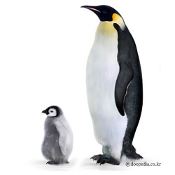

- 학명: Aptenodytes forsteri

- 계: 동물
- 문: 척삭동물
- 강: 조류
- 목: 펭귄목
- 과: 펭귄과
- 멸종위기등급: 관심대상(LC : Least Concern, 출처 : IUCN</li>
- 크기: 키 최대 122cm
- 무게: 22.7~45.4kg
- 몸의 빛깔: 머리·턱·목·등·꼬리·날개의 윗부분은 검은색, 배와 날개의 아랫면은 흰색, 귀 부분이 선명한 노란색, 가슴 부위는 옅은 노란색
- 산란시기: 5월~6월 초
- 수명: 약 20년
- 생활양식: 집단 생활
- 서식장소: 바람을 피할 수 있으며 부서질 위험이 없는 단단한 얼음 위
- 분포지역: 로스해, 케이프워싱턴(cape washington), 빅토리아랜드의 쿨먼섬 등
현재 존재하는 펭귄 중 몸집이 가장 크다. 키는 최대 122cm, 몸무게는 22.7~45.4kg이다. 수컷이 암컷보다 약간 더 크고, 알을 품고 새끼를 양육하는 동안은 체중이 많이 줄어든다. 부리의 길이는 약 8cm이다. 머리·턱·목·등·꼬리·날개의 바깥 면은 검은색, 배와 날개의 안쪽 면은 흰색이다. 검은색 부분과 흰색 부분의 경계가 뚜렷하다. 귀 부분이 선명한 노란색인 것이 특징적이며 가슴 부위는 옅은 노란색이다. 윗부리는 검은색, 아랫부리는 분홍색, 주황색 또는 라일락색이다. 어린 개체는 전체적으로 은회색 솜털로 덮여 있으며 머리·귀·턱·목은 검은색이며 얼굴은 흰색이다.
[네이버 지식백과] 황제펭귄 [Emperor Penguin] (두산백과)